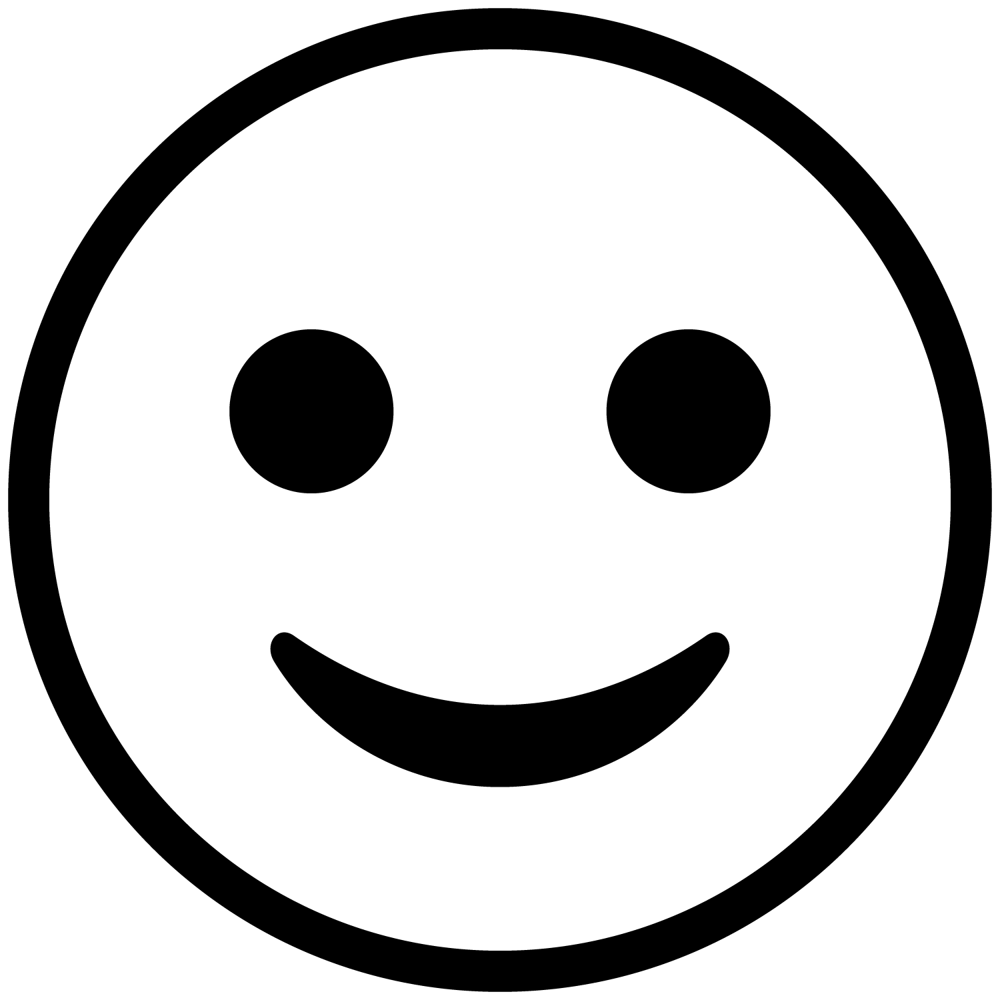
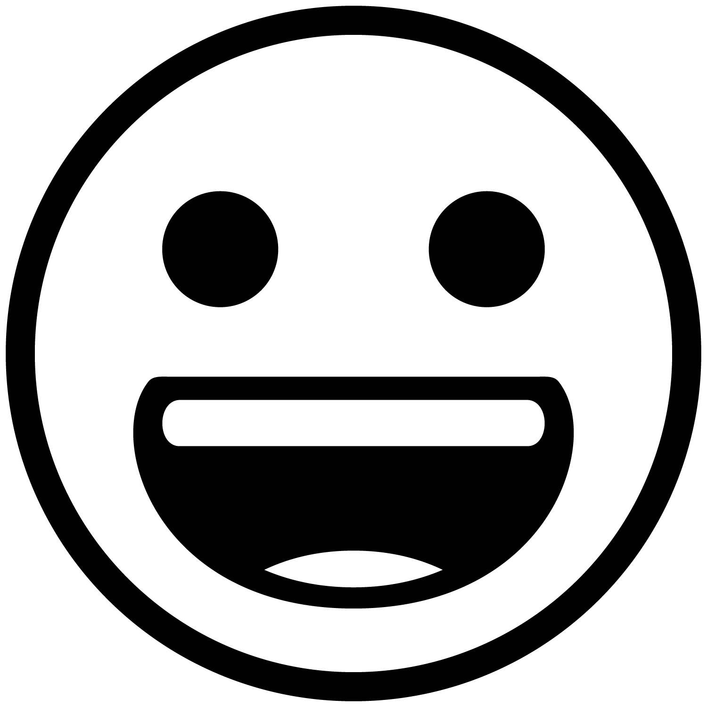
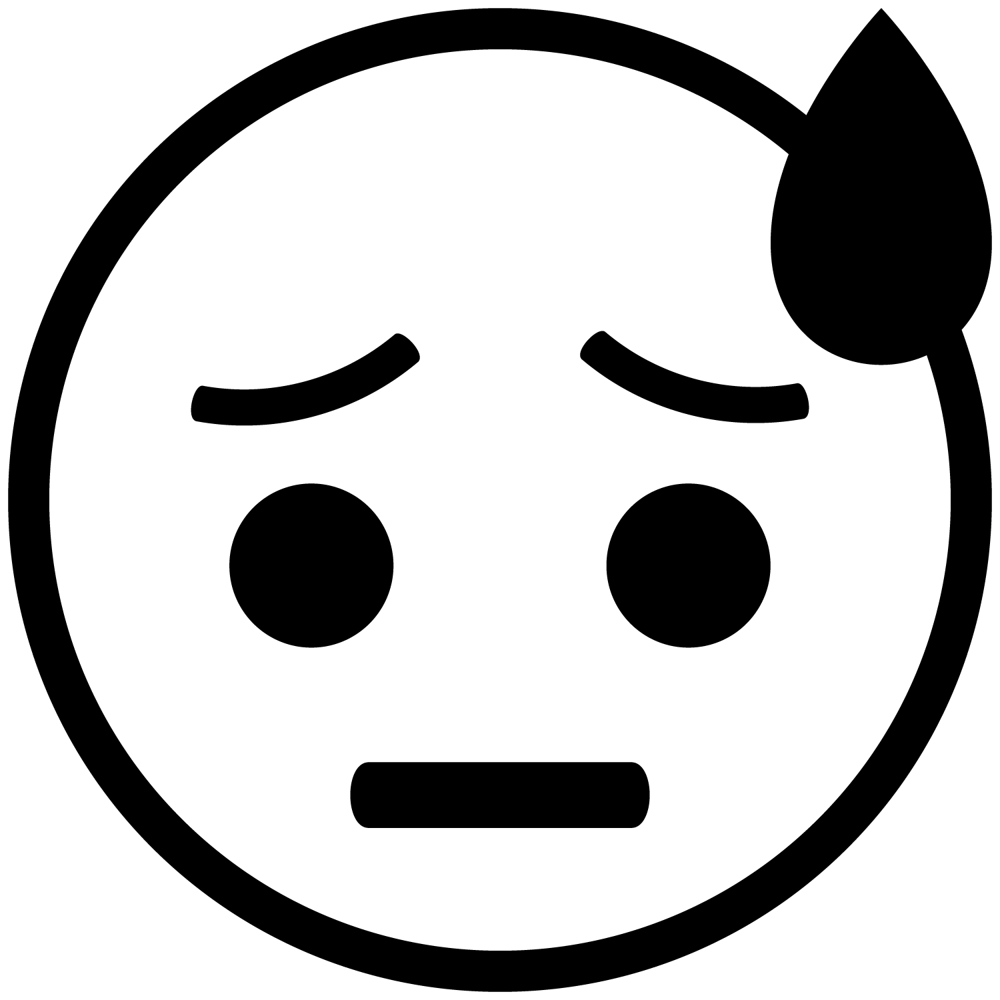
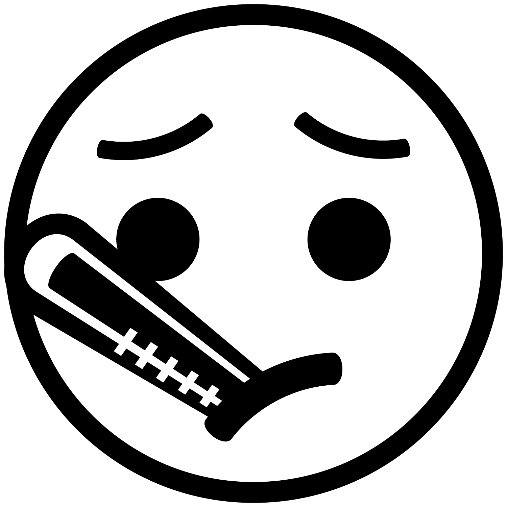
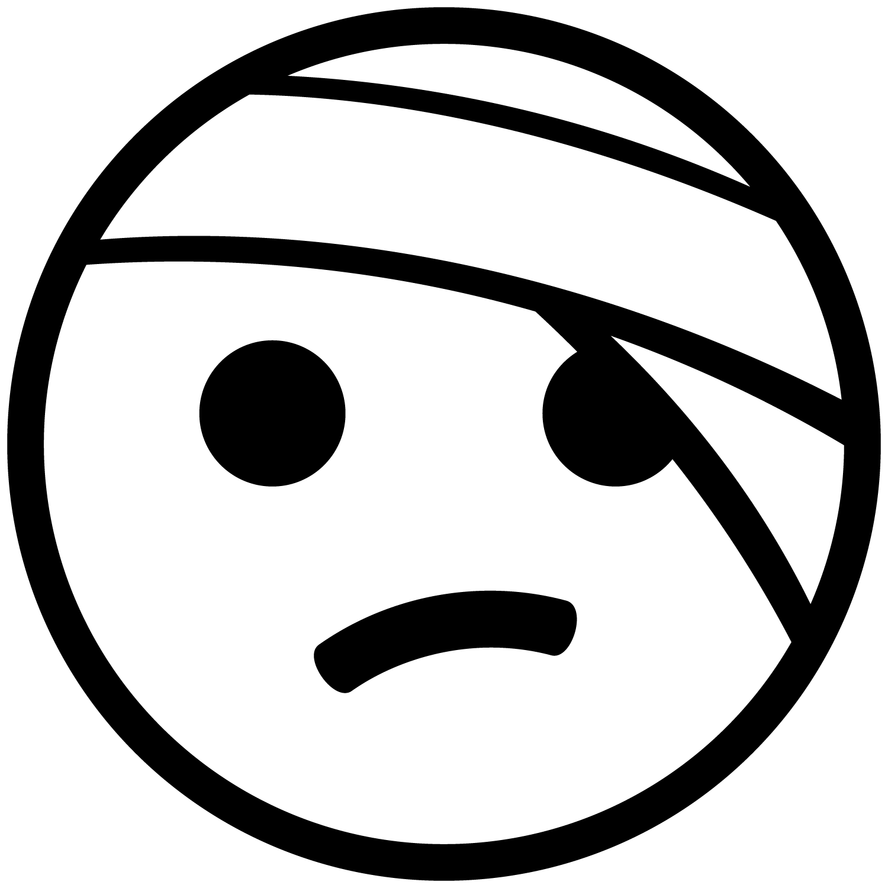
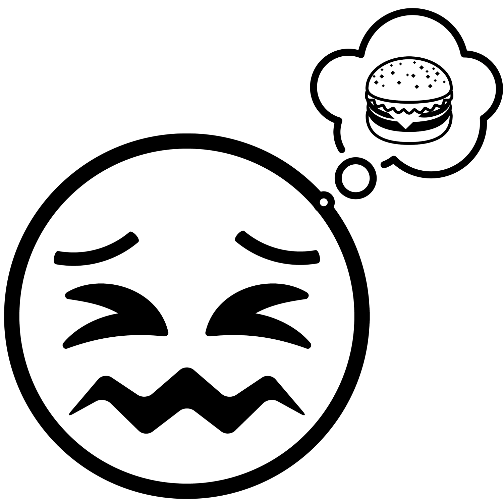
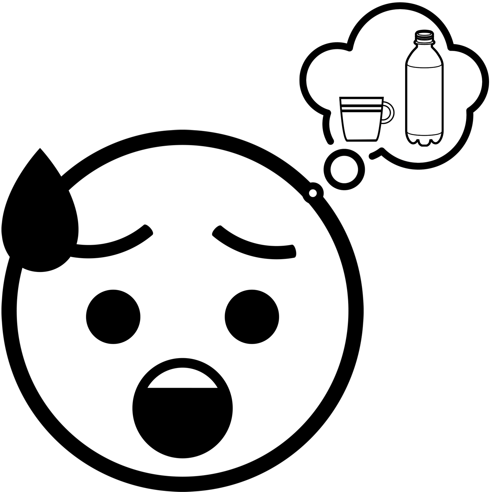

Homáabe mi?  Kucí’’acin aa? How are you?
Kucí’’acin aa? How are you?
On this webpage, you can learn how to ask how someone is feeling and how to respond in Nisenan and Miwok.
You can ask how someone is feeling using one of the following phrases. Note that, when speaking Nisenan or Miwok, you use different language depending on whether you are asking 1 person or a group of people how they feel:
| English | Nisenan | Miwok |
How are you? (said to 1 person) |
Homáabe mi? |
Kucí’’acin aa? |
You can respond in any of a number of ways. For example, here are some phrases that you might use to share how you feel in Nisenan or Miwok:
| English | Nisenan | Miwok |
 I am good. |
Wenném ni. |
Kucít. |
I am not good. |
Wennemením ni. |
Kucí’wat. |
 I am happy. |
Kɨɨpém ni. |
Apóoyum. |
I am unhappy/sad. |
Kɨɨpemením ni. |
Eyáhŋem. |
I am angry. (said by a woman) |
Hont’owím ni. |
Osá’ŋem. |
I am angry. (said by a man) |
Əəním ni. |
Naŋá’ŋem. |
 I am scared/nervous. |
Bɨɨk’ɨ́m ni. |
Yɨtɨ́ttɨttɨm. |
I am healthy/well. |
Wadáam ni. |
Kucí’’acit. |
 I am sick. |
Wamayím ni. |
Halɨ́yŋem. |
 I am hurt. |
K’ɨɨt’ím ni. |
Sikéenɨm. |
I am tired. |
Helúum ni. |
Ṭánŋem. |
I am sleepy. |
Yɨk’ɨk’ɨ́m ni. |
Yáŋ’eksɨm. |
 I am hungry. |
Ok’óm ni. |
Hakáyŋem. |
 I am thirsty. |
Mowoonóm ni. |
Heléwŋem. |


.png){kind=link}